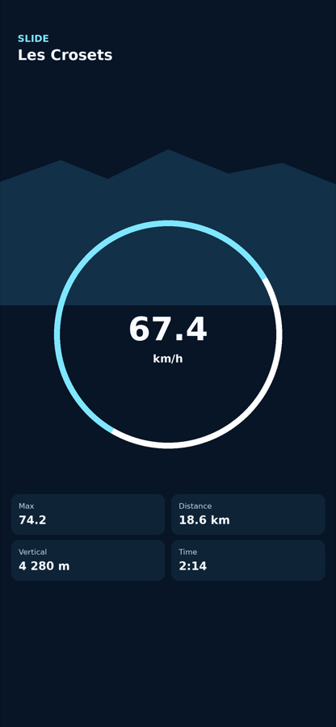
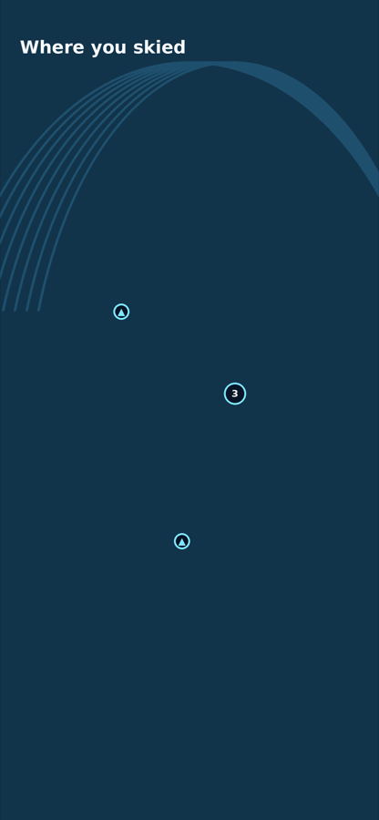
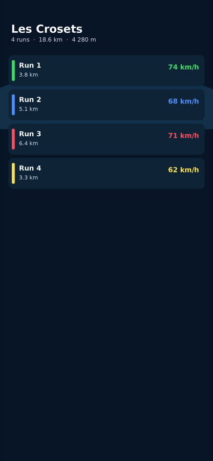
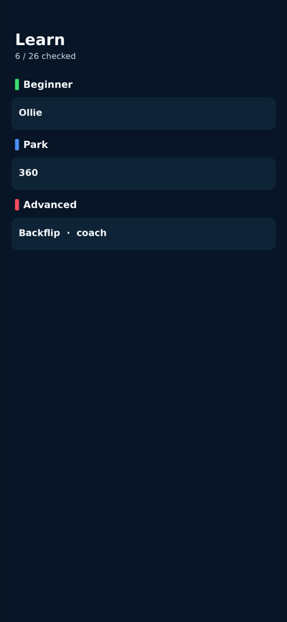

Every run, on your phone.
No signal needed.
Chaque descente, dans ton téléphone.
Sans réseau.
Slide tracks speed, distance, vertical and every run, even with the screen locked. It splits descents, lifts and rests by itself. Nothing is uploaded and there is no account.
Slide mesure la vitesse, la distance, le dénivelé et chaque descente, même écran verrouillé. Il sépare tout seul les descentes, les remontées et les pauses. Rien n’est envoyé et il n’y a pas de compte.




What Slide does
Ce que fait Slide
Live trackingSuivi en direct
Big speed reading, max, distance, vertical, altitude and time. A hybrid map with the track coloured by speed.
Grande vitesse à l’écran, max, distance, dénivelé, altitude et durée. Une carte hybride avec la trace colorée par la vitesse.
Runs, found for youLes descentes, trouvées pour toi
Descents, lifts and rests are detected automatically. GPS jumps and jitter are filtered out.
Descentes, remontées et pauses sont détectées automatiquement. Les sauts et le bruit du GPS sont filtrés.
Season historyHistorique de saison
Totals from 1 September to 31 August, records, charts and a replay of each day on the map.
Totaux du 1er septembre au 31 août, records, graphiques et replay de chaque journée sur la carte.
Dynamic Island & voiceDynamic Island et voix
Current speed on the Lock Screen and Dynamic Island. A headset coach reads your speed, distance and runs.
La vitesse sur l’écran verrouillé et la Dynamic Island. Un coach dans le casque annonce vitesse, distance et descentes.
Freestyle courseCours de freestyle
Offline tips from park rules to grabs, rails and 540s. Inversions are marked coach-required.
Des conseils hors ligne, des règles du park aux grabs, rails et 540. Les figures inversées sont marquées « avec un coach ».
Private by designPrivé par conception
No account, no server, no analytics. Share a day yourself as GPX, an image or a .slide file.
Pas de compte, pas de serveur, pas de statistiques d’usage. Tu partages une journée toi-même en GPX, image ou fichier .slide.